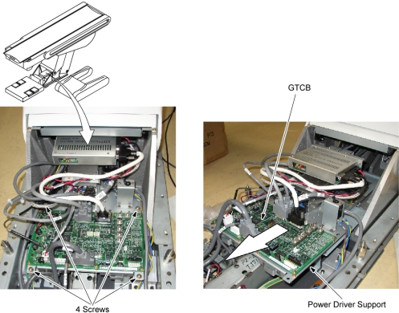

Operating Documentation
Direction 5181166-800, Rev# 7
BrightSpeed Select Service Methods Adv
Operating Documentation |
| Required Persons | Preliminary Reqs | Procedure | Finalization |
|---|---|---|---|
| 1 |
| Last Revised: | 29 May 2007 |
| Item | Qty | Effectivity | Part# | Manufacturer | |
|---|---|---|---|---|---|
| GTCB2 | 1 | - | 5142177-2 | - | |
Move the cradle to the mechanical OUT limit position by hand.
Raise the Table to its highest position.
| NOTE: | If the Table up/down movement is inoperative, use the service power cable to raise the Table (refer to Enforced Table Elevation). |
Remove power from Table by turning off 120VAC, Axial Drive and HVDC switches on Service Switch Panel.
Remove the Rear Bottom Cover.
Remove 4 screws, and slide the power driver support toward the Gantry.
Illustration 1: Location of GTCB Assembly

Disconnect all cable connectors from the GTCB assembly.
Remove 8 screws, and remove the GTCB assembly from the power driver support.
Re-connect all cable connectors to the GTCB assembly.
Power up the Table from the Service Switch Panel.
Perform the following:
Flashdownload (Wait approximately 2 minutes until GTCB firmware start up sequence completion before Flashdownload.)
Table Characterization
Mechanical Characterization
Turn off all 3 switches (Axial Drive, HVDC, 120VAC), and re-install the Table Covers.